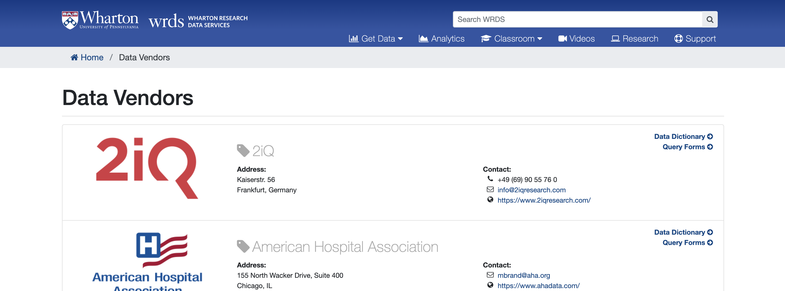

Explore Datasets and Tables#
On WRDS Online#
On the WRDS website, you can explore databases and their corresponding tables by navigating to the “Data Vendors” page here:
https://wrds-www.wharton.upenn.edu/pages/about/data-vendors/

In order to use the Data Dictionaries, you will have to know the vendor for your database. For instance, S&P Global provides the Compustat Executive Compensation database. The Directors compensation table and its correponding variables can be found here: https://wrds-www.wharton.upenn.edu/data-dictionary/comp_execucomp/directorcomp/
In Python#
The wrds package in python also allow you to explore the database and corresponding tables. Please install and load the wrds package along with any other packages you will use. If you would like to use our shared conda environment today, you can access it with:
module load mamba
source activate /kellogg/software/envs/wrds25_env
# packages
import wrds
import pandas as pd
Once you have a hidden pgpass file saved, you will not have to enter your crednetials the next time you login to the WRDS API in python.
conn = wrds.Connection(wrds_username='best-user-ever')
Loading library list...
Done
These are the available functions in the wrds package:¶
conn.connection()- setupconn.list_libraries()- exploreconn.list_tables()- exploreconn.describe_table()- exploreconn.get_table()- queriesconn.raw_sql()- queries
To get details on any of these functions.
help(conn.list_libraries)
Help on method list_libraries in module wrds.sql:
list_libraries() method of wrds.sql.Connection instance
Return all the libraries (schemas) the user can access.
:rtype: list
Usage::
>>> db.list_libraries()
['aha', 'audit', 'block', 'boardex', ...]
To get a list of all WRDS libraries or databases
libs = conn.list_libraries()[60:95]
print(libs)
['comp_snapshot', 'comp_urq', 'comph', 'compsamp', 'compsamp_all', 'compsamp_snapshot', 'compseg', 'compsnap', 'contrib', 'contrib_as_filed_financials', 'contrib_ceo_turnover', 'contrib_char_returns', 'contrib_corporate_culture', 'contrib_general', 'contrib_global_factor', 'contrib_green_returns', 'contrib_intangible_value', 'contrib_kpss', 'contrib_liquidity_taq', 'contrib_liva', 'crsp', 'crsp_a_ccm', 'crsp_a_indexes', 'crsp_a_stock', 'crsp_a_treasuries', 'crsp_m_ccm', 'crsp_m_indexes', 'crsp_m_stock', 'crsp_m_treasuries', 'crsp_q_ccm', 'crsp_q_indexes', 'crsp_q_mutualfunds', 'crsp_q_stock', 'crsp_q_treasuries', 'crspm']
To find all the tables in certain databases.
conn.list_tables(library='bvd_orbis_large')[0:5]
['ob_additional_company_info_l',
'ob_all_addresses_l',
'ob_all_cur_shh_1st_level_l',
'ob_all_subs_first_level_l',
'ob_auditors_current_l']
To find a description of a particular table in a database.
conn.describe_table(library='bvd_orbis_large', table='ob_key_financials_l')
Approximately 16803566 rows in bvd_orbis_large.ob_key_financials_l.
| name | nullable | type | comment | |
|---|---|---|---|---|
| 0 | bvdid | True | VARCHAR(50) | BVD ID NUMBER |
| 1 | category_of_company | True | VARCHAR(20) | CATEGORY OF THE COMPANY |
| 2 | ctryiso | True | VARCHAR(2) | COUNTRY ISO CODE |
| 3 | conscode | True | VARCHAR(2) | CONSOLIDATION CODE |
| 4 | filing_type | True | VARCHAR(25) | FILING TYPE |
| 5 | closdate | True | DATE | CLOSING DATE |
| 6 | closdate_year | True | DOUBLE PRECISION | Year part of CLOSING DATE (created from CLOSDA... |
| 7 | nr_months | True | VARCHAR(2) | NUMBER OF MONTHS |
| 8 | audstatus | True | VARCHAR(25) | AUDIT STATUS |
| 9 | accpractice | True | VARCHAR(25) | ACCOUNTING PRACTICE |
| 10 | source | True | VARCHAR(50) | SOURCE (FOR PUBLICLY QUOTED COMPANIES) |
| 11 | orig_units | True | VARCHAR(25) | ORIGINAL UNITS |
| 12 | orig_currency | True | VARCHAR(3) | ORIGINAL CURRENCY |
| 13 | exchrate | True | DOUBLE PRECISION | EXCHANGE RATE FROM ORIGINAL CURRENCY |
| 14 | opre | True | DOUBLE PRECISION | OPERATING REVENUE (TURNOVER) |
| 15 | plbt | True | DOUBLE PRECISION | P/L BEFORE TAX |
| 16 | pl | True | DOUBLE PRECISION | P/L FOR PERIOD (=NET INCOME) |
| 17 | cf | True | DOUBLE PRECISION | CASH FLOW |
| 18 | toas | True | DOUBLE PRECISION | TOTAL ASSETS |
| 19 | shfd | True | DOUBLE PRECISION | SHAREHOLDERS FUNDS |
| 20 | curr | True | DOUBLE PRECISION | CURRENT RATIO (X) |
| 21 | prma | True | DOUBLE PRECISION | PROFIT MARGIN (%) |
| 22 | rshf | True | DOUBLE PRECISION | ROE USING P/L BEFORE TAX (%) |
| 23 | rcem | True | DOUBLE PRECISION | ROCE USING P/L BEFORE TAX (%) |
| 24 | solr | True | DOUBLE PRECISION | SOLVENCY RATIO (ASSET BASED) (%) |
| 25 | _611 | True | DOUBLE PRECISION | PRICE EARNING RATIO (X) |
| 26 | empl | True | DOUBLE PRECISION | NUMBER OF EMPLOYEES |
| 27 | astk_market_cap | True | DOUBLE PRECISION | MARKET CAPITALISATION (MIL) |
In R#
These are the functions available in R:
dbConnect()– setupdbGetQuery(wrds, "SELECT schema_name FROM information_schema.schemata")– explore librariesdbGetQuery(wrds, "SELECT table_name FROM information_schema.tables WHERE table_schema='execcomp'")– explore tablesdbGetQuery(wrds, "SELECT column_name, data_type FROM information_schema.columns WHERE table_schema='execcomp' AND table_name='excomp'")– describe tabledbGetQuery(wrds, "SELECT * FROM execcomp.excomp LIMIT 5")– quick table querydbGetQuery(wrds, "SELECT ...")– raw SQL query
To find the description of the variables in a table in R:
import rpy2
%load_ext rpy2.ipython
The rpy2.ipython extension is already loaded. To reload it, use:
%reload_ext rpy2.ipython
%%R
library(DBI)
library(RPostgres)
wrds <- dbConnect(
Postgres(),
host = 'wrds-pgdata.wharton.upenn.edu',
port = 9737,
dbname = 'wrds',
sslmode = 'require',
user = 'best-user-ever',
)
%%R
# Create SQL query
sql <- paste0("
SELECT column_name, data_type, is_nullable
FROM information_schema.columns
WHERE table_schema = 'bvd_orbis_large'
AND table_name = 'ob_key_financials_l'
ORDER BY ordinal_position;
")
# Execute the query
desc <- dbGetQuery(wrds, sql)
print(desc)
column_name data_type is_nullable
1 bvdid character varying YES
2 category_of_company character varying YES
3 ctryiso character varying YES
4 conscode character varying YES
5 filing_type character varying YES
6 closdate date YES
7 closdate_year double precision YES
8 nr_months character varying YES
9 audstatus character varying YES
10 accpractice character varying YES
11 source character varying YES
12 orig_units character varying YES
13 orig_currency character varying YES
14 exchrate double precision YES
15 opre double precision YES
16 plbt double precision YES
17 pl double precision YES
18 cf double precision YES
19 toas double precision YES
20 shfd double precision YES
21 curr double precision YES
22 prma double precision YES
23 rshf double precision YES
24 rcem double precision YES
25 solr double precision YES
26 _611 double precision YES
27 empl double precision YES
28 astk_market_cap double precision YES
Lab 2#
Lab 2 - Obtain Directors Compensation Table
Either in R or Python:
Obtain the variable list for the Director’s Compensation Table in Compustat
Explore the variable list for any table you like